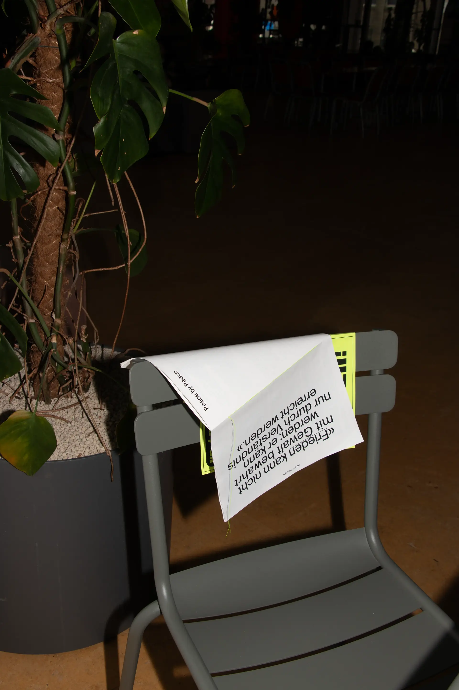
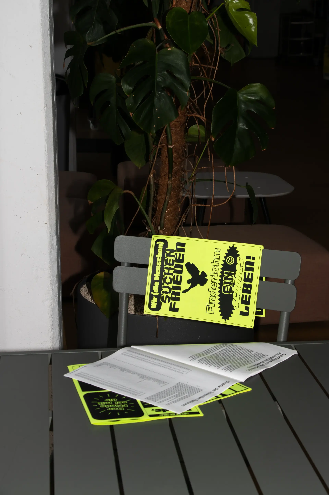
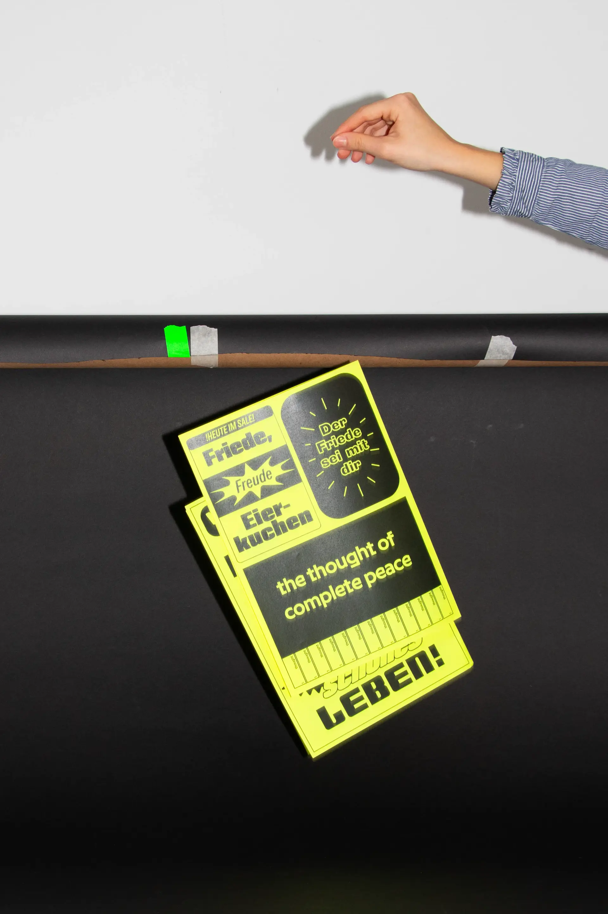
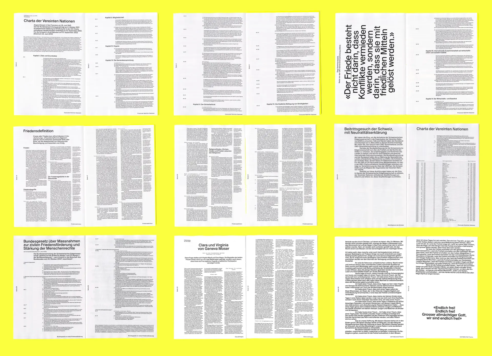

Peace by Peace is a forty-page publication focusing on the theme of peace. The publication is typeset in Suisse Int’l and Suisse Int’l Mono. To complement the publication, peace advertisements were designed and printed on yellow neon paper. The publication begins with static legal texts and becomes increasingly emotional towards the end. It concludes with Martin Luther King‘s ‘I Have a Dream’ speech. The design reflects this progression in content.
2nd BA Graphic Design, 2025
InDesign, Illustrator
Lecturers: Tiziana Artemisio & Mirko Leuenberger



